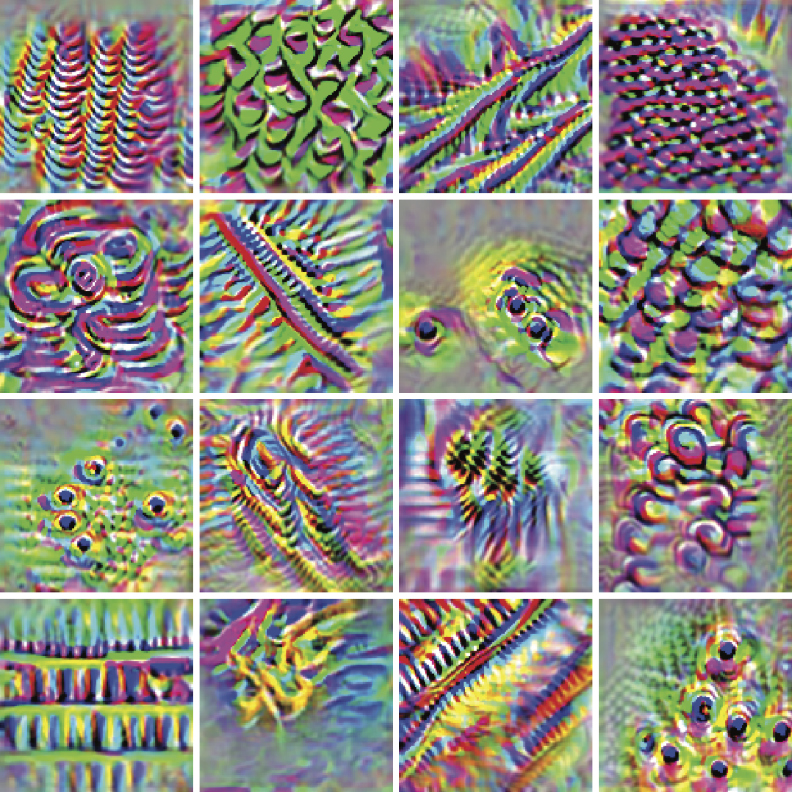
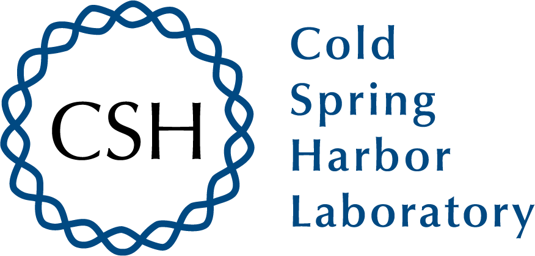
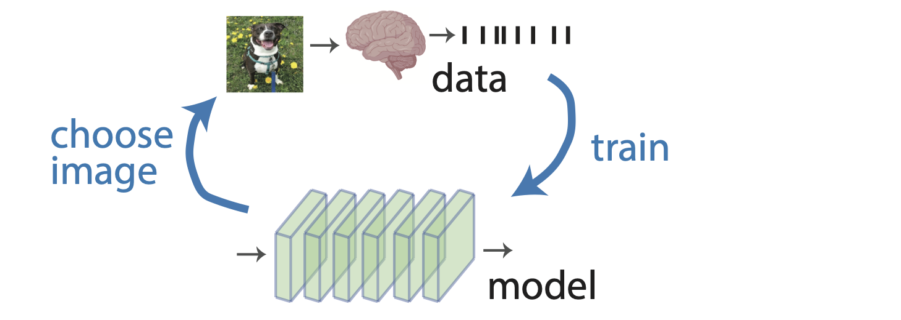
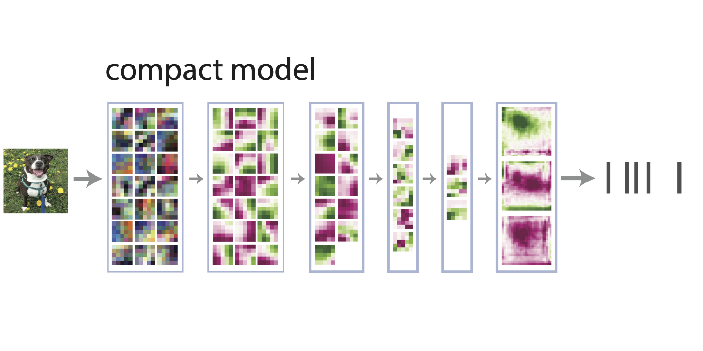
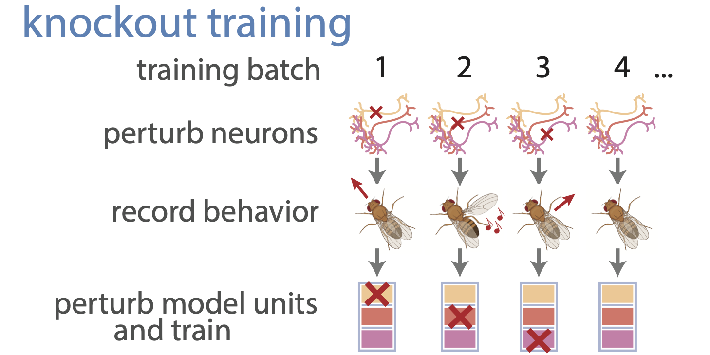

synthesized images to maximize V4 neural responses
Recent news:
-- Cosyne 2026:
Cowley Lab will have three posters at Cosyne 2026:
"A tale of two tails: Preferred and anti-preferred natural stimuli in the visual cortex."
Rabia Gondur with Stan, Smith, Cowley.
"Modeling a fluctuating internal state over multiple timescales: A day in the life of a singing mouse."
Yaman Thapa, Zheng, Davis, Harpole, Cowley*, Banerjee*.
"Data-driven, model-optimized stimuli to probe visual projection neurons in Drosophila."
Jon Skaza with Gondur, Matsliah, Cowley.
-- New paper:
"A tale of two tails: Preferred and anti-preferred natural stimuli in visual cortex." Gondur, Stan, Smith, Cowley. ICLR 2026.
-- New paper:
Our work on compact models of visual cortex has been published in Nature, Feb 2026
BlueSky Thread
-- New paper:
"Time to let the model speak for itself with closed-loop neurophysiology." Cowley. Nature Reviews Neuroscience, 2025. Journal Club piece.
-- Our work on modeling the fruit fly visual system has been published in Nature, May 2024

Our work on compact models of visual cortex has been published in Nature, Feb 2026
BlueSky Thread
"Time to let the model speak for itself with closed-loop neurophysiology." Cowley. Nature Reviews Neuroscience, 2025. Journal Club piece.
What are the step-by-step computations of the brain?
We are a computational neuroscience/neuroAI research group led by Prof. Benjamin Cowley at Cold Spring Harbor Laboratory. We develop machine learning techniques and build data-driven deep neural network models to understand how a stimulus is transformed into neural activity and then into behavior. By understanding the brain's computations, we will better treat disease, develop new neurotechnologies, and uncover the foundations of human intelligence.
Our research group focuses on the following directions:
closed-loop methods for systems neuroscience
We are fundamentally limited by the amount of recording time, but our models are data-hungry. We develop closed-loop methods to collect data and train a model in tandem.

explainable models for computational neuroscience
Today's highly-predictive models---deep neural networks---comprise millions of parameters which essentially hide their inner workings. We build models that are both highly-predictive and explainable; we then analyze the inner workings of these models to hypothesize about the internal computations of the brain.

modeling perturbations of neurons
One of the best tools we have to understand the brain is our ability to causally perturb its neurons, either genetically or via stimulation. However, it is difficult to understand the subtle changes in behavior across perturbations of different neurons and neuron types. We develop machine learning methods to unify different perturbations into a single explainable model.

experimental collaborations
We like to stay as close to the data as possible, and we are nothing without our wonderful experimental collaborators:
Florin Albeanu (CSHL), mouse olfaction and behavior
Arkarup Banerjee (CSHL), singing mouse behavior
Mala Murthy (Princeton), fruit fly visual system and neural perturbations
Frederic Roemschied (Gottingen), optogenetics and fruit fly behavior
Matthew A. Smith (Carnegie Mellon), macaque V4 tuning
Maxwell Turner (UAlbany), fruit fly visual system and neural recordings
Funding:
National Institutes of Health
National Eye Institute
Pershing Square Innovation Fund